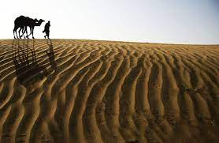
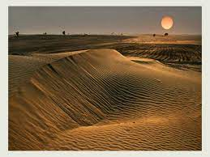
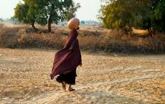

The Thal desert is situated at 31°10’ N and 71°30’ E in the province of Punjab, Pakistan. Located near the Pothohar Plateau, the area falls under the Indomalayan biogeographic realm and stretches for a length of approximately 190 miles (310 km) with a maximum breadth of 70 miles (119 km). It is bound by the piedmont of the northern Salt Range, the Indus River flood plains in the west and the Jhelum and Chenab River floodplains in the east. It is a subtropical sandy desert that resembles the deserts of Cholistan and Thar geographically. The region is characterized by sand dunes, prone to massive shifting and rolling, as well as scanty rainfall, high diurnal variation of temperature and high wind velocity. Aridity is a common feature and perennial grasses make up much of the vegetation. Agriculture and livestock rearing form the main sources of livelihood for the population, who live in small scattered settlements throughout the desert.
 ;  